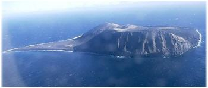

Ideas para entender y transformar al mundo
27 nuevos sitios al Patrimonio Cultural de la Humanidad
(imagen: Surtsey) El 8 de este mes, la UNESCO declaró a 27 nuevos sitios Patrimonio de la Humanidad: 19 culturales y 8 naturales. La lista completa en este enlace: UNESCO – 27 nuevos sitios.
Metadatos y acciones
 Temas: cultura, geografia, tierra ⋅
Para guardar: Enlace permanente a esta anotación.
Temas: cultura, geografia, tierra ⋅
Para guardar: Enlace permanente a esta anotación.
 Print This Post
Print This Post
Categorías
Últimas 4 anotaciones
Últimas anotaciones en cada categoría

Divulgación
El dinero no fomenta la creatividad: Daniel Pink en TEDGlobal 2009

Inspiración
Los 30 no son los nuevos 20

Noticias
Ver tu mente en tiempo real: Christopher deCharms en TED 2008
![Música en la era digital [Animación]](../../../wp-content/themes/tma/images/featured/animation_04_2009_featured.jpg)
Ocio
Música en la era digital [Animación]
Creado con Wordpress | © 2008 - 2017 Ajmme Kajros
Comentarios
Los comentarios están cerrados.
Comments are closed.